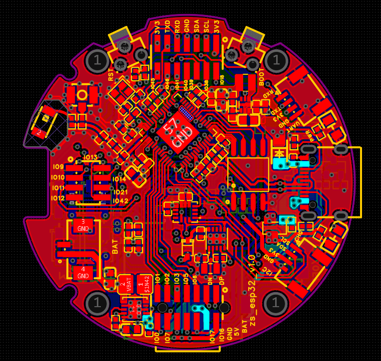
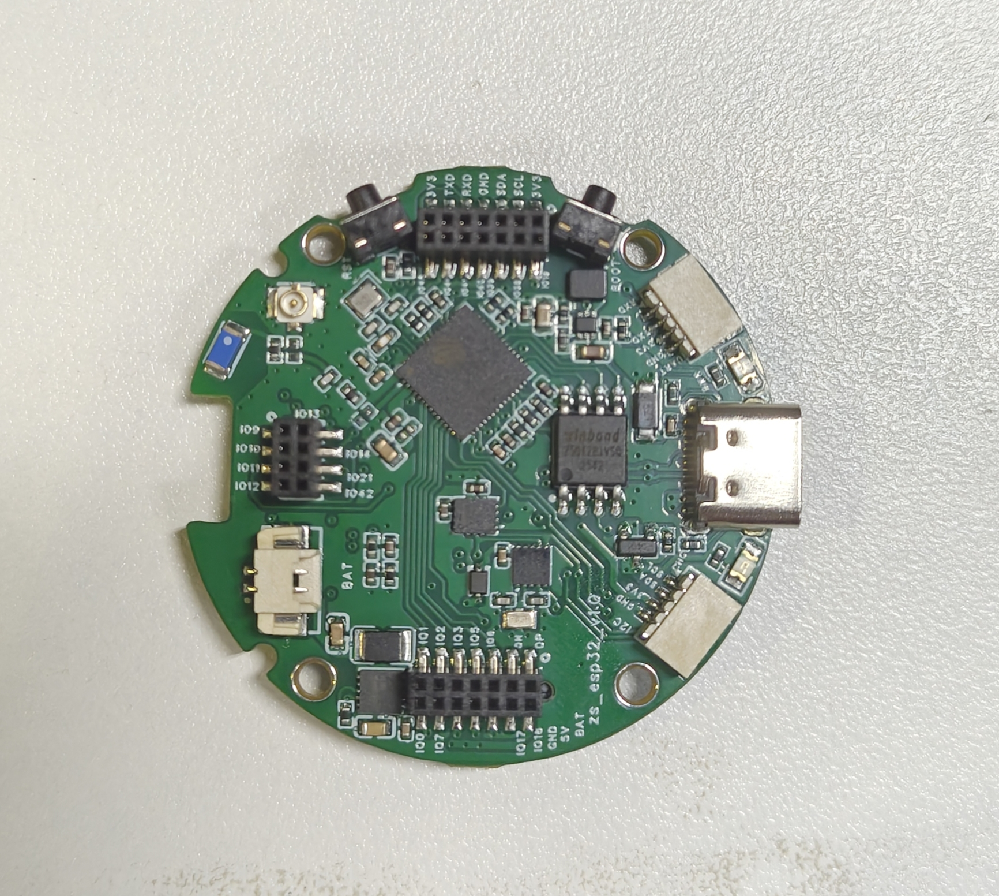
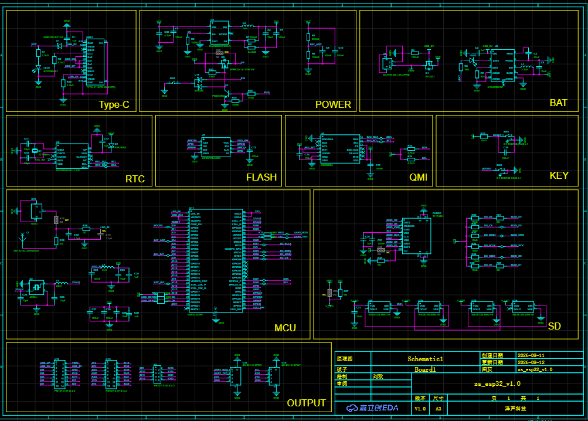
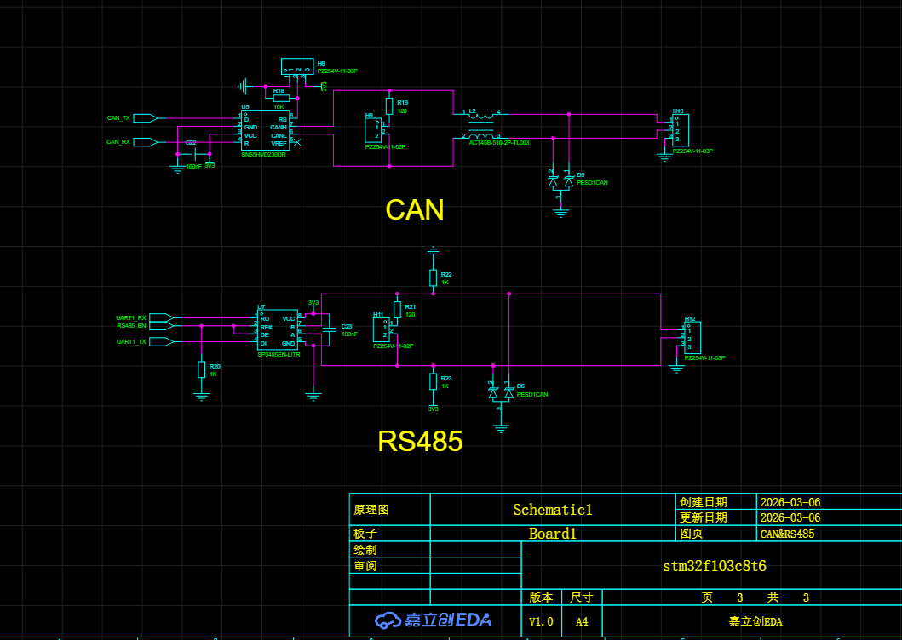
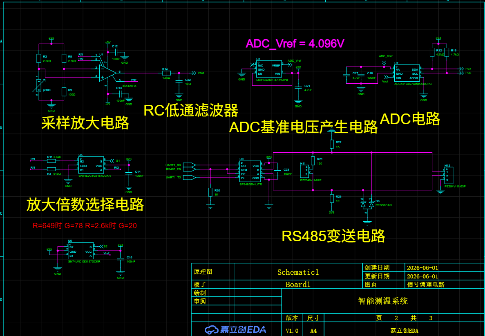
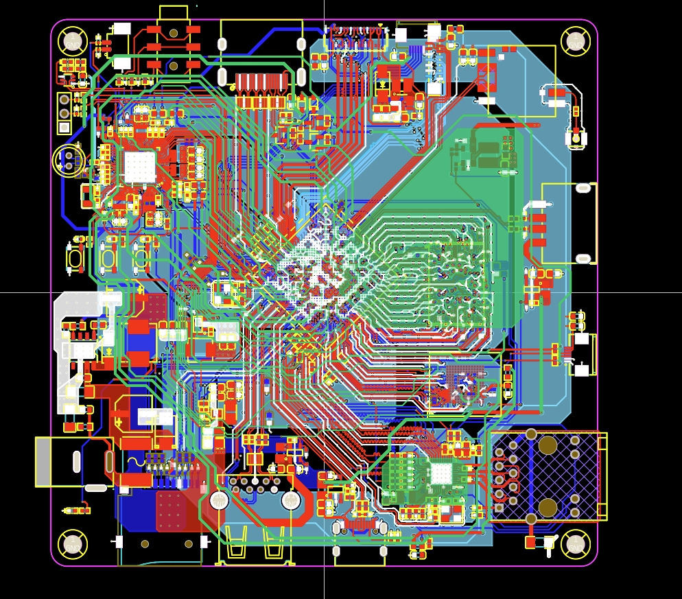
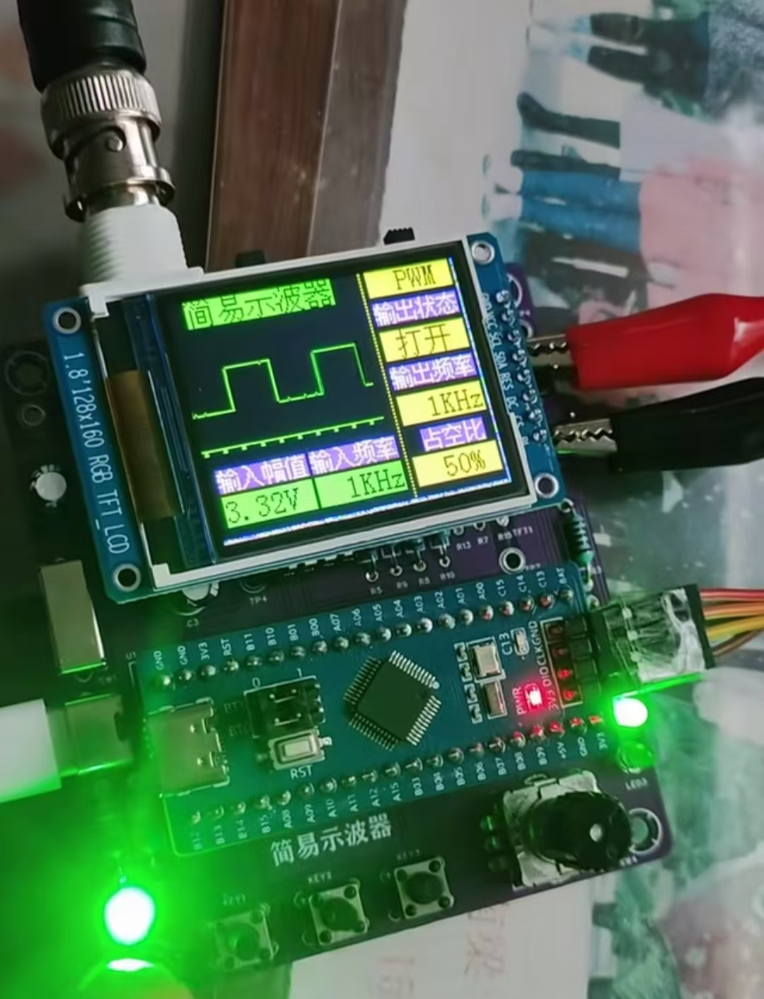
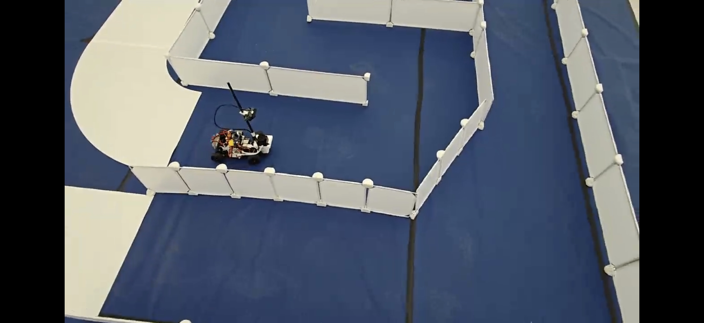
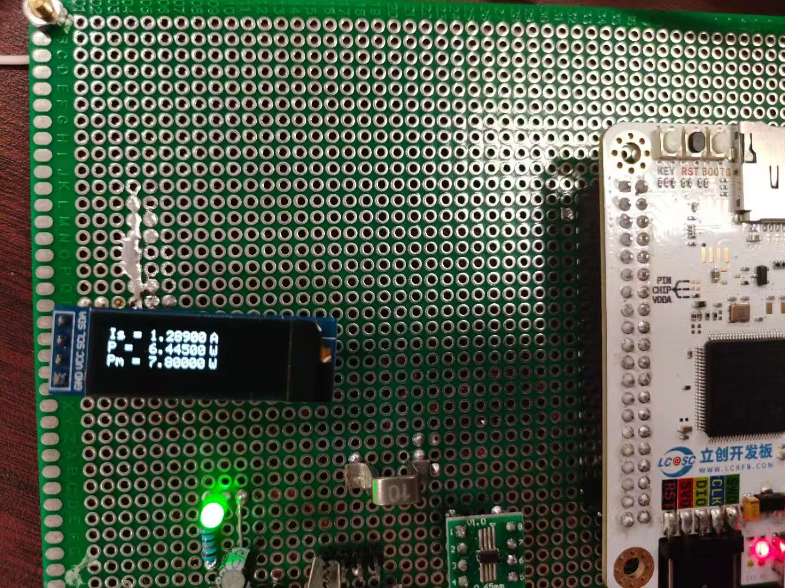

01
已打板ESP32-S3 板级硬件设计
以 ESP32-S3 为核心完成嵌入式控制板的原理图和 PCB 设计，并形成实物板作为后续 Bring-up 与功能验证基础。
- 个人职责
- 独立完成原理图与 PCB 设计
- 工程交付物
- 原理图、PCB、已打板实物
- 设计关注点
- 电源、下载复位、接口与布局
- 下一步
- 上电、下载、串口与外设基础验证
2026 CAMPUS RECRUITMENT
专注嵌入式系统的原理图与 PCB 设计，覆盖通信接口、模拟采集与复杂 SoC 板级硬件。
以下项目真实区分设计、打板与验证状态，不以未经验证的数据作为结论。
01 / PROFILE
围绕实际接口、电源、保护与布局约束完成原理图和 PCB 设计。作品集中保留设计依据、工程交付物与待验证项，让设计能力和当前进度都清晰可见。
02 / SELECTED WORK
以 ESP32-S3 打板项目为主案例，通信、模拟采集和 SoC 板级设计共同构成硬件能力边界。

01
已打板以 ESP32-S3 为核心完成嵌入式控制板的原理图和 PCB 设计，并形成实物板作为后续 Bring-up 与功能验证基础。

HARDWARE EVIDENCE
以打板实物、PCB 层叠图和关键模块截图共同证明工程交付完成度。

DESIGN REVIEW
在原理图中说明电源树、下载复位与外设接口；在 PCB 中审视分区、回流与去耦摆放。

02
设计完成，待验证围绕 CAN 与 RS485 通信接口完成收发器、端接、接口连接与 ESD/浪涌保护相关硬件设计。

03
设计完成，待验证面向温度传感应用完成测量系统原理图和 PCB 设计，重点梳理模拟采集链路与 MCU 显示、下载及按键模块。

04
PCB 设计完成，待打板以复杂 SoC 平台为载体完成 PCB 设计，作为高速接口、供电网络、BGA 扇出与高密度布局布线能力的设计案例。
03 / CAPABILITIES
按功能划分模块，明确电源、下载调试、MCU/SoC 与外设接口连接关系。
在接口、电源入口与通信链路中考虑保护、滤波、端接和基础可靠性措施。
覆盖 PT100 测量链路、CAN、RS485 及嵌入式控制相关接口设计。
处理功能分区、去耦、回流路径、接口布置及高密度板级互连约束。
04 / WORKFLOW
每个阶段留下可审阅的交付物，降低设计和验证阶段的不确定性。
梳理功能、接口、电源和空间约束。
完成模块选型、连接关系与设计审查。
处理分区、布局、布线与制造约束。
执行 ERC、DRC 并输出生产文件。
按计划完成上电、下载、接口与功能验证。
05 / ADDITIONAL WORK

补充展示采样、显示与嵌入式系统集成经历。

竞赛项目与团队协作经历。

电子系统方案设计与现场交付经验。
06 / CONTACT